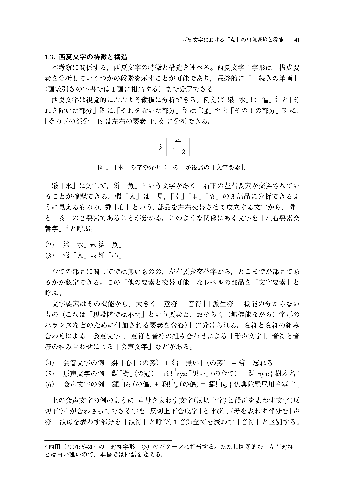

Between Mincho and Tangut Calligraphy.
AraTangut is a custom font designed for the paper of Japanese Tangutologist Shintaro Arakawa. It creates a unique and ethnic flavour between Mincho and Tangut calligraphy. AraTangut helps to give new energy to language studies in Japan and encourages the production of typefaces for other scripts.


Selected Type in Use
Real-world Academic Rendering

Typeface using in Professor Shintaro Arakawa's academic paper.
On the environment in which a “dot” appears in Tangut characters and on its function, Journal of the Linguistic Society of Japan, 164, 39-66, 2023
AraTangut was built out of a direct necessity to empower academic literature. See how the fine-tuned contrasts between Mincho styling and ancient Tangut strokes resolve legibility challenges in high-density multi-script environments.
Download Academic Paper (PDF)